Home | Titles | The Author | About MAMBA-Ryu | Contact Us | Links

 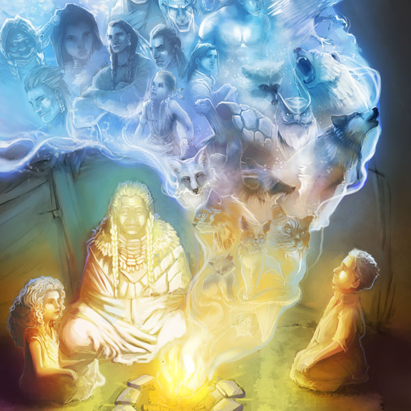
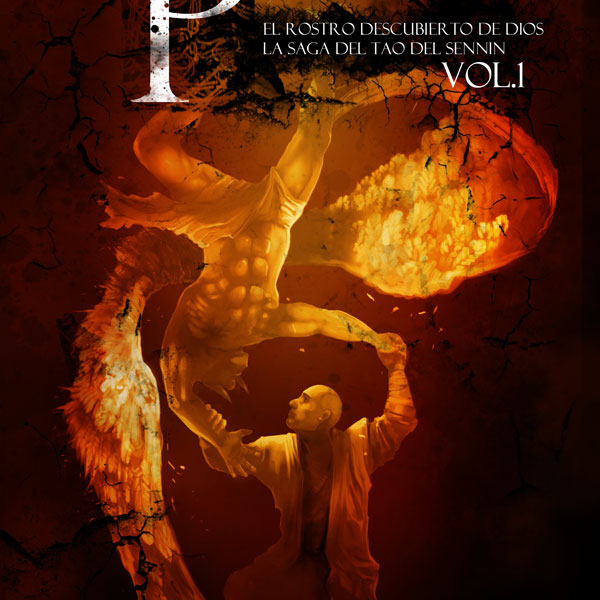
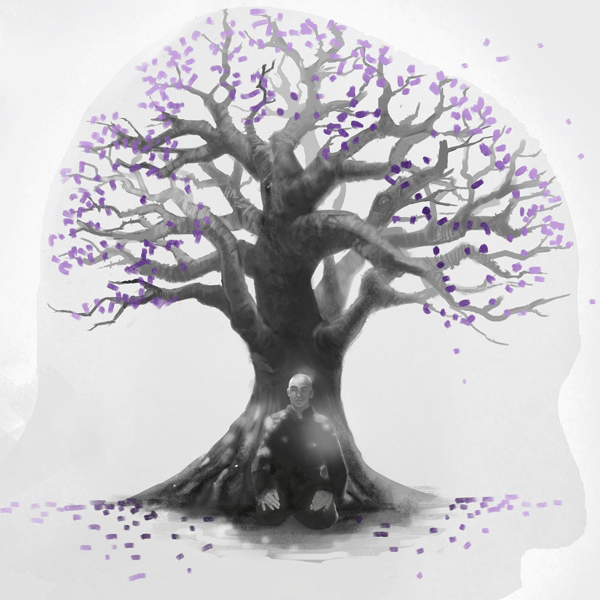
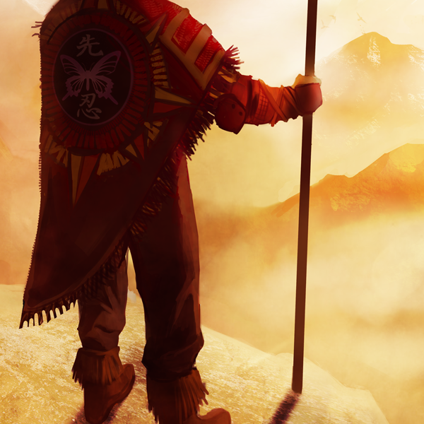
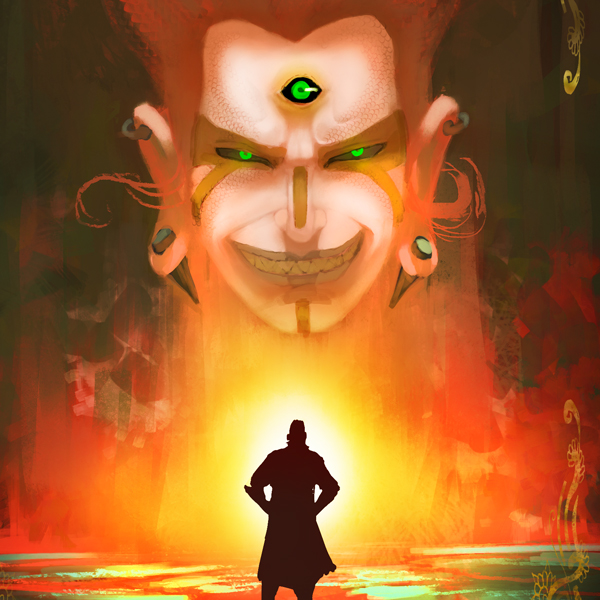
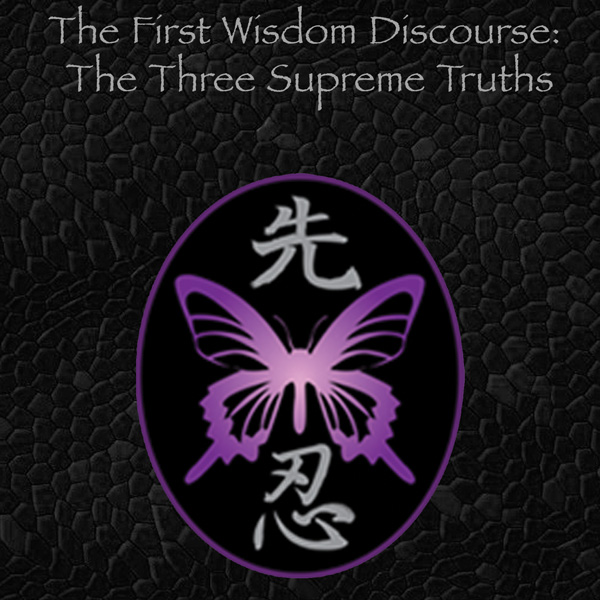
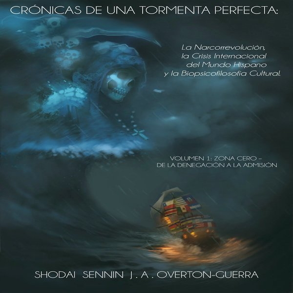
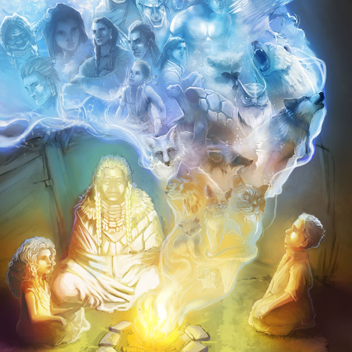
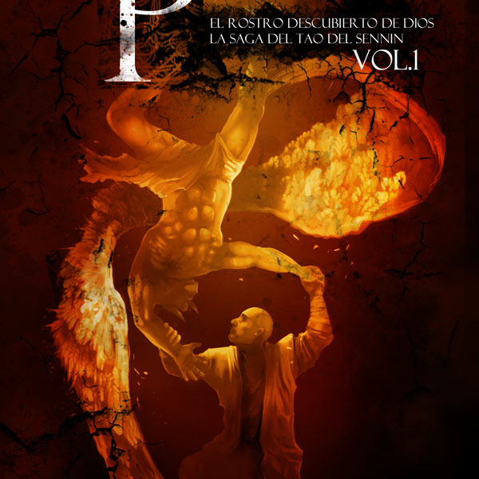
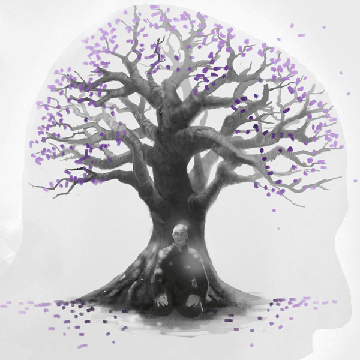
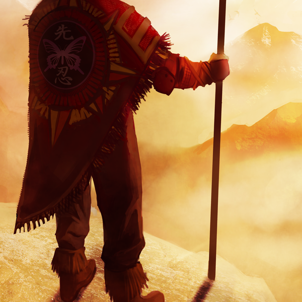
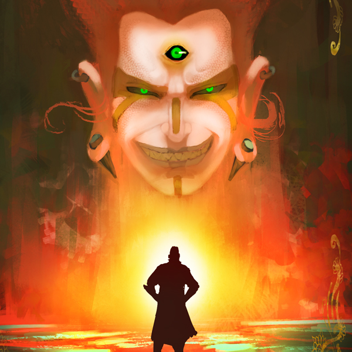
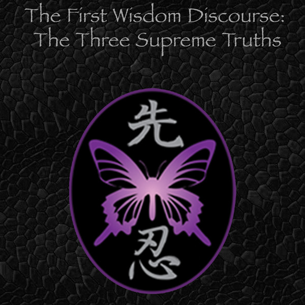
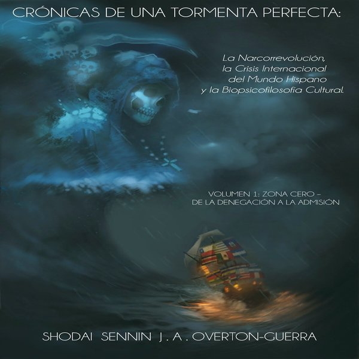
Maestros Kaizen
El autentico camino a la Excelencia!! … La pregunta fundamental es: ¿Qué tanta serenidad, armonía, balance, paz, satisfacción, FELICIDAD tiene usted o ha conseguido en su vida?
Read More
Mandated Report Volume I: Overview
Seemingly radical on the surface, and at its heart scathing, righteous and powerful, Mandated Report, volume I is a probing and insightful exposé of exactly what is wrong with America.
Read More
Poemas de un Sennin
“El maestro artista en realidad tiene una sola obra que fluye de la fuente que es sí mismo; arte es su esencia y lo manifiesta de todas las formas de las cuales es capaz.”
Read More
Conversaciones con un veterano Don Juan
“Freud no entendía de las mujeres … la mayoría no tenéis ni la menor idea de lo que queréis y que en el fondo buscáis al príncipe encantador que os sepa rescatar de vosotras mismas. Sobre todo hoy en día…”
Read More
El Tao de Julio Wolf
“¿Por qué estoy aquí? Eso no tiene ciencia, solo tiene humanidad. Nada humano me es ajeno. No me habléis de Dios, ni de dioses ni de santos ni de demonios. No tengo paciencia para estupideces. Habladme de seres humanos, de compromiso, de esfuerzo, de deber…”
Read More
La Bitácora de Capitán Julio A Wolf
“¿Qué cojones hacia un chaval de once años en un bosque de noche? Respuesta: Star Trek, o sea, “To boldly go where no man has gone before.” En español os lo digo para que lo entendáis: “Para audazmente ir adonde ningún hombre ha ido antes”, o en esta caso, adonde ningún chaval de once años ha ido de noche antes…”
Read More
Lo Que Tengo Que Decir
“La grandeza de un pueblo no se basa en su devoción religiosa – ni mucho menos en cuántos conciertos oficia, cuántos partidos de futbol televisa, ni en cuántas festividades celebra… los “dioses” siempre favorecen al más fuerte, al más aplicado, al más audaz, y no al más “piadoso” ni al más ocioso…”
Read More
La Bitácora de Shodai
“Con respecto a la diferencia entre "querer" y "deber", para el iluminado no existe. Lo que debo hacer y lo que quiero hacer es siempre lo mismo. Si debo hacerlo, de acuerdo a mis principios, es que quiero hacerlo porque tiene que haber coherencia entre mis principios y mis fines u objetivos… "Querer es deber; deber es querer.”
Read More
Tiempos de Miakoda
“¿Pero el cortejo es algo lindo, no?”
“Si estuviéramos hablando de animales en época de celo pues sí, sería cierto. Y ese es el problema. Durante el ‘cortejo’, como lo llamas, los hombres procuran dar muestras de ser todo lo que no son, sino solamente lo que imaginan que las mujeres quieren que sean para conseguir satisfacer impulsos primarios que ellos mismos no acaban de entender…”
Read More
Cuentos Ancestrales de Omayok el Grande-
“¿Y ahora qué sucede Abuelito Omayok?”, preguntó Alexio.
“¿A dónde se fueron las imágenes en el fuego?”, inquirió Julila.
“Nunca se sabe que va a suceder después cuando los espíritus de los ancestros se ponen a revelarnos historias. Quizás estén descansando; quizás cayera la señal… ¿o quizás simplemente quieran darle a Alexio un turno para que escoja él un cuento?”
“¡Sí!”
“¡No!”
Read More
Penuel: El Rostro Descubierto de Dios
“Los Tres Grandes Defectos de la Humanidad – la ignorancia, la soberbia y la apatía – operando en conjunto con, y como resultado de la Alienación Interior Congénita, que a su vez surge de la facultad de la Imaginocepción Humana, generan los Tres Grandes Engaños, que a su vez ocasionan las Tres Grandes Malignidades de la Sombra, a decir: el miedo, el egoísmo y la autocompasión, fomentan, como ciclo pernicioso, de nuevo los Tres Grandes Defectos de la Humanidad…”
Read More
El Misticismo del Sennin
"Lastima que mi madre no estuviera viva para presenciar como lidie con su muerte!”, es lo que pense despues del seminario. Esa noche yo mismo era la verdadera ensenanza – no solamente mis palabras, mis pensamientos, mis ideas, sino mi propia conducta y sobre todo mis emociones. El mundo academico, donde el enfasis esta en lo racional, en lo intelectual, nada puede aportar al ser humano con respecto a como lidiar con los traumas de la vida. Las religiones, ante todo las occidentales provenientes y difundidas por todo el medio-oriente, no aportan sino ensenanzas corruptas y creencias absurdas que idealizan el sufrimiento, engendran el miedo, siembran y enfatizan los apegos, esclavizan el espiritu con sus disparates ilogicos y acaban ultrajando la esencia del ser humano, sepultandolo en una tumba en vida donde vive o en denegacion de la muerte o en terror a la misma. Esa noche demostre lo que es El Sendero de MAMBA, demostre lo que significa La Mision del Maestro de MAMBA Ryu…"
Read More
La Mente del Sabio Guerrero Iluminado
"Simplemente:el que no maneja las emociones, no maneja la mente; el que no maneja la mente, no maneja la vida; y el que no maneja la vida no puede conocer la felicidad. Este argumento es central, axiomatico, no solamente a la serie presente, sino a casi toda la filosofia espiritual del extremo oriente, principios que aunque quizas extranos para la mentalidad occidental, rigen las vidas de la mayoria de las personas del planeta. Quien no este de acuerdo con este argumento nada tendra que beneficiarse de esta serie “La Mente del Sabio- Guerrero Iluminado” y pierde su tiempo y su dinero en comprar los libros o en atender a los seminarios. Punto. Quien lo acepte como algo logico y razonable no encontrara ninguna coleccion literaria o programa de formacion psicofilosofica-espiritual comparable. Para juzgarlo hay que probarlo ya que, como se dice en ingles, “the proof is in the pudding”, o sea, la evidencia se encuentra en la prueba misma, en el probar, o sea, en la experimentacion…"
Read More
Cinco Soliloquios con el Demonio Mara
EL SENNIN: Pues en realidad yo no fastidio a nadie ya que según tú ni me leen ni me van a leer, así que hay una falta de lógica y una sobra de irracionalidad en tus argumentos.
MARA: ¡La pinche fregada! ¡Aquí no queremos lógica! ¡Aquí reina la irracionalidad, gobierna lo absurdo, y manda lo desatinado! ¿A dónde vas ahora?
EL SENNIN: Pues a trabajar en mí proyecto del programa de ciencias. Ya te dije que estaba pendiente para hoy.
MARA: ¡Pero estás sordo o qué! ¡Aquí no queremos ciencias! ¡No queremos filosofía! ¡Queremos milagros que nadie ve! ¡Queremos rezar para que nada cambie! ¡Queremos ser mártires en esta vida para ser premiados en nuestra fantasía! ¡Aquí se vive para la muerte porque se vive la muerte en vida! ¡Vivimos en el obscurantismo medieval y nos gusta! ¡Así somos más y más explotables! ¡Cuánto más miserables estamos más felices somos porque nos sentimos más merecedores del Perdón Divino! ¿Acaso no entiendes el porqué de la religiosidad?
Read More
Broken Arrow: The End of Western Liberal Democracy
Like the imagination from where is emerges, the
many misperceptions about culture come from a general
lack of understanding of its true nature and
what it really represents to a human being.
Read More
Ninshou and the Sennin
Here are Three Undeniable or Supreme Truths for you,
with a capital ‘T’ on Three and on ‘Truths’:
Number 1: ‘Everything changes’,
that is the Supreme Truth of Mutability...
Read More
Cronicas de Una Tormenta Perfecta
...es la otra cara del multiculturalismo: la posición
políticamente correcta – pero efectivamente errónea –
de que todas las culturas son iguales y que
ninguna es inherente superior a otra o a las demás.
Read More